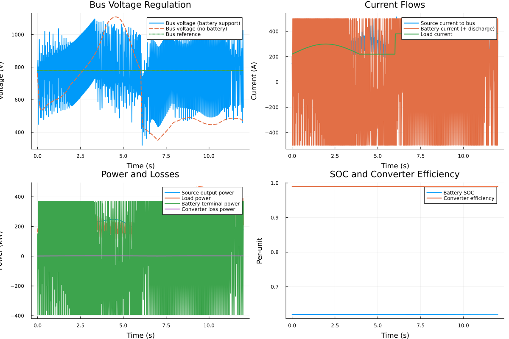
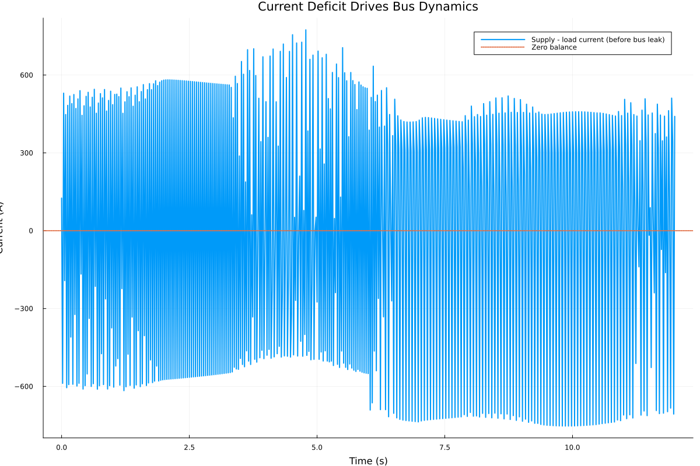

Converter + Battery Dynamic Walkthrough
This literate example runs a nontrivial dynamic scenario and generates plots that highlight key model capabilities:
- wild source-side voltage feeding a common DC bus,
- current saturation and conversion losses,
- bus voltage droop when supply cannot meet load,
- battery support reducing bus-voltage excursions,
- SOC and efficiency trends over time.
using PowerConverterDynamicsKeep GR headless-friendly in local/CI doc builds.
ENV["GKSwstype"] = "100"
using Plots
gr()
default(size = (1200, 800), lw = 2)Scenario Setup
We compare two cases:
- Active battery support: PI bus-voltage control and battery current limits enabled.
- No battery support: battery current limits set to zero.
common = (
reference_bus_voltage = 780.0,
bus_capacitance = 0.03,
bus_leak_conductance = 2.5e-3,
source_current_limit = 900.0,
source_power_limit = 650_000.0,
converter_loss_constant = 180.0,
converter_loss_linear = 0.7,
converter_loss_quadratic = 9e-4,
converter_ratio_loss_gain = 0.07,
battery_capacity_Ah = 260.0,
battery_soc_min = 0.10,
battery_soc_max = 0.90,
)
params_active = ConverterParams(
;
common...,
bus_controller_kp = 10.0,
bus_controller_ki = 18.0,
battery_current_limit_charge = 500.0,
battery_current_limit_discharge = 500.0,
)
params_no_battery = ConverterParams(
;
common...,
bus_controller_kp = 0.0,
bus_controller_ki = 0.0,
battery_current_limit_charge = 0.0,
battery_current_limit_discharge = 0.0,
)
state0 = SystemState(bus_voltage = 760.0, soc = 0.62, controller_integrator = 0.0)
source_voltage_profile(t) = 430.0 + 360.0 * abs(sin(0.45 * t)) + 20.0 * sin(3.0 * t)
source_current_command_profile(t) = 310.0 + 15.0 * sin(1.7 * t)
source_current_available_profile(t) = 260.0 + 90.0 * max(0.0, sin(0.3 * t))
load_current_profile(t) = 220.0 + (t > 6.0 ? 160.0 : 0.0) + 80.0 * max(0.0, sin(0.8 * t))
result_active = simulate(
state0,
params_active;
tspan = (0.0, 12.0),
dt = 0.02,
source_voltage = source_voltage_profile,
source_current_command = source_current_command_profile,
source_current_available = source_current_available_profile,
load_current = load_current_profile,
)
result_no_battery = simulate(
state0,
params_no_battery;
tspan = (0.0, 12.0),
dt = 0.02,
source_voltage = source_voltage_profile,
source_current_command = source_current_command_profile,
source_current_available = source_current_available_profile,
load_current = load_current_profile,
)SimulationResult{Float64, Float64}([0.0, 0.02, 0.04, 0.06, 0.08, 0.1, 0.12000000000000001, 0.14, 0.16, 0.18 … 11.839999999999836, 11.859999999999836, 11.879999999999836, 11.899999999999835, 11.919999999999835, 11.939999999999834, 11.959999999999834, 11.979999999999833, 11.999999999999833, 12.0], SystemState{Float64}[SystemState{Float64}(760.0, 0.62, 0.0), SystemState{Float64}(709.156140154911, 0.6199999999995942, 0.4), SystemState{Float64}(665.7972084399117, 0.6199999999991884, 1.8168771969017805), SystemState{Float64}(629.8980114013352, 0.6199999999987825, 4.100933028103546), SystemState{Float64}(601.1407870628906, 0.6199999999983766, 7.1029728000768415), SystemState{Float64}(578.9252827471769, 0.6199999999979707, 10.68015705881903), SystemState{Float64}(562.4320622956452, 0.6199999999975648, 14.701651403875493), SystemState{Float64}(550.7234878707071, 0.6199999999971589, 19.05301015796259), SystemState{Float64}(542.8520426136506, 0.619999999996753, 23.638540400548447), SystemState{Float64}(537.9470763871161, 0.6199999999963471, 28.381499548275436) … SystemState{Float64}(480.7097428787459, 0.6199999997597089, 1681.2236121460949), SystemState{Float64}(479.13276436577485, 0.619999999759303, 1687.20941728852), SystemState{Float64}(477.4804410031462, 0.6199999997588971, 1693.2267620012044), SystemState{Float64}(475.8057863825697, 0.6199999997584912, 1699.2771531811416), SystemState{Float64}(474.1349608166106, 0.6199999997580853, 1705.36103745349), SystemState{Float64}(472.48117530014315, 0.6199999997576794, 1711.478338237158), SystemState{Float64}(470.85136437897677, 0.6199999997572735, 1717.628714731155), SystemState{Float64}(469.2493837413007, 0.6199999997568676, 1723.8116874435755), SystemState{Float64}(467.6775373566891, 0.6199999997564617, 1730.0266997687495), SystemState{Float64}(467.6775373566762, 0.6199999997560496, 1730.0266997688016)], FlowSnapshot{Float64}[FlowSnapshot{Float64}(260.0, 145.63421052019785, 111800.0, 110681.99999535037, 1118.000004649628, 0.9899999999584115, -3.090169943749474e-7, 0.0, 761.6000000153766, -0.00023534734292071158, 167200.0, -76.26578978881915), FlowSnapshot{Float64}(260.5399967600058, 158.01443845620423, 113188.79724140905, 112056.90926434752, 1131.8879770615313, 0.9899999999589413, -3.090169943749474e-7, 0.0, 761.6000000153036, -0.000235347342920689, 156922.03196459377, -65.03839759056574), FlowSnapshot{Float64}(261.0799740801867, 170.37526087299594, 114581.18493041677, 113435.37307646242, 1145.8118539543502, 0.9899999999594158, -3.090169943749474e-7, 0.0, 761.6000000152305, -0.00023534734292066643, 148179.53583404102, -53.848795572823256), FlowSnapshot{Float64}(261.6199125214171, 182.27743442773078, 115975.95300406315, 114816.1934693649, 1159.7595346982562, 0.98999999995984, -3.090169943749474e-7, 0.0, 761.6000000151575, -0.00023534734292064388, 140995.44215665766, -43.13583651964955), FlowSnapshot{Float64}(262.1597926459719, 193.29610125627158, 117371.8893434873, 116198.1704453833, 1173.718898104009, 0.9899999999602189, -3.090169943749474e-7, 0.0, 761.6000000150844, -0.0002353473429206213, 135326.71327452952, -33.3232564828274), FlowSnapshot{Float64}(262.69959501822456, 203.1006583492488, 118767.78390470814, 117580.10606097663, 1187.677843731508, 0.9899999999605581, -3.090169943749474e-7, 0.0, 761.6000000150113, -0.0002353473429205987, 131064.7331485195, -24.73983068416997), FlowSnapshot{Float64}(263.2393002053481, 211.51142777709566, 120162.43285704148, 118960.80852376833, 1201.6243332731538, 0.989999999960863, -3.090169943749474e-7, 0.0, 761.6000000149384, -0.00023534734292057614, 128047.90028150582, -17.562861642285803), FlowSnapshot{Float64}(263.77888877801433, 218.51092051193203, 121554.64271403407, 120339.09628217004, 1215.5464318640297, 0.9899999999611391, -3.090169943749474e-7, 0.0, 761.6000000148653, -0.00023534734292055356, 126083.33989338644, -11.807167888864564), FlowSnapshot{Float64}(264.3183413110924, 224.21174194459743, 122943.23444175365, 121713.80209258944, 1229.4323491642135, 0.9899999999613915, -3.090169943749474e-7, 0.0, 761.6000000147922, -0.00023534734292053096, 124971.08747806173, -7.357449341845578), FlowSnapshot{Float64}(264.8576383843499, 228.80276230119955, 124327.04752929055, 123083.77704922657, 1243.2704800639767, 0.9899999999616246, -3.090169943749474e-7, 0.0, 761.6000000147192, -0.0002353473429205084, 124524.1119681893, -4.022333836654271) … FlowSnapshot{Float64}(260.0, 378.8363068961002, 183949.80170423942, 182110.303681158, 1839.4980230814253, 0.9899999999671703, -3.090169943749474e-7, 0.0, 761.5999999721242, -0.00023534734290734584, 182669.70229392344, -2.3654677701136215), FlowSnapshot{Float64}(260.0, 378.71934717529996, 183289.74518881505, 181456.84773090307, 1832.8974579119822, 0.9899999999671347, -3.090169943749474e-7, 0.0, 761.5999999720513, -0.00023534734290732329, 182070.45045899446, -2.478485044631447), FlowSnapshot{Float64}(260.0, 378.6817194799623, 182639.50951831424, 180813.1144171221, 1826.3951011921454, 0.9899999999670992, -3.090169943749474e-7, 0.0, 761.5999999719781, -0.0002353473429073007, 181442.56758119556, -2.5119819315625516), FlowSnapshot{Float64}(260.0, 378.68327642533853, 181999.69104593995, 180179.69412948622, 1819.9969164537324, 0.989999999967064, -3.090169943749474e-7, 0.0, 761.599999971905, -0.00023534734290727813, 180806.1988253765, -2.5062383496348595), FlowSnapshot{Float64}(259.99999999999994, 378.70465943566825, 181370.82713997824, 179557.11886259844, 1813.708277379803, 0.9899999999670289, -3.090169943749474e-7, 0.0, 761.5999999718321, -0.00023534734290725555, 180171.28511031202, -2.4806782753902477), FlowSnapshot{Float64}(260.0, 378.73648686483864, 180753.39439284056, 178945.8604429462, 1807.533949894365, 0.9899999999669942, -3.090169943749474e-7, 0.0, 761.599999971759, -0.00023534734290723297, 179542.8466140544, -2.4447163824286875), FlowSnapshot{Float64}(260.0, 378.77415776278275, 180147.80705056182, 178346.32897410405, 1801.4780764577736, 0.9899999999669598, -3.090169943749474e-7, 0.0, 761.5999999716859, -0.0002353473429072104, 178923.51846401117, -2.402970957181661), FlowSnapshot{Float64}(260.0, 378.81535419079785, 179554.415668397, 177758.87150577444, 1795.5441626225656, 0.9899999999669258, -3.090169943749474e-7, 0.0, 761.5999999716129, -0.00023534734290718784, 178314.76582169425, -2.3577695775723724), FlowSnapshot{Float64}(260.0, 378.85884349478033, 178973.505997341, 177183.77093144215, 1789.735065898858, 0.9899999999668923, -3.090169943749474e-7, 0.0, 761.5999999715398, -0.00023534734290716524, 177717.46419554183, -2.3103506576283603), FlowSnapshot{Float64}(259.99999999999994, 378.85884349478056, 178973.50599733618, 177183.77093143738, 1789.7350658987998, 0.9899999999668923, -3.090169943749474e-7, 0.0, 761.5999999714655, -0.0002353473429071423, 177717.46419553697, -2.310350657628101)])Extract Time Series
t = result_active.time
v_bus_active = getfield.(result_active.states, :bus_voltage)
v_bus_no_battery = getfield.(result_no_battery.states, :bus_voltage)
soc_active = getfield.(result_active.states, :soc)
i_src_bus = getfield.(result_active.flows, :source_output_current)
i_batt = getfield.(result_active.flows, :battery_current)
i_load = load_current_profile.(t)
eff = getfield.(result_active.flows, :converter_efficiency)
p_src_bus_kw = getfield.(result_active.flows, :source_output_power) ./ 1000
p_loss_kw = getfield.(result_active.flows, :converter_loss_power) ./ 1000
p_load_kw = getfield.(result_active.flows, :load_power) ./ 1000
p_batt_kw = getfield.(result_active.flows, :battery_terminal_power) ./ 1000602-element Vector{Float64}:
150.31999999998516
-393.29961345175997
368.300560567132
-85.83759729595702
368.2998061331451
-393.29883976277057
368.29978687814247
-393.298820507768
368.2997676231398
-253.60828406318407
⋮
-393.22022198378636
368.22116909915843
213.72507723945606
-393.2196498517306
368.2205969671026
368.21963059675284
-393.2186642263787
368.21961134175075
368.21961134171397Plots
p1 = plot(
t,
v_bus_active;
label = "Bus voltage (battery support)",
xlabel = "Time (s)",
ylabel = "Voltage (V)",
title = "Bus Voltage Regulation",
)
plot!(p1, t, v_bus_no_battery; label = "Bus voltage (no battery)", ls = :dash)
plot!(p1, t, fill(params_active.reference_bus_voltage, length(t)); label = "Bus reference", ls = :dot)
p2 = plot(
t,
i_src_bus;
label = "Source current to bus",
xlabel = "Time (s)",
ylabel = "Current (A)",
title = "Current Flows",
)
plot!(p2, t, i_batt; label = "Battery current (+ discharge)")
plot!(p2, t, i_load; label = "Load current")
p3 = plot(
t,
p_src_bus_kw;
label = "Source output power",
xlabel = "Time (s)",
ylabel = "Power (kW)",
title = "Power and Losses",
)
plot!(p3, t, p_load_kw; label = "Load power")
plot!(p3, t, p_batt_kw; label = "Battery terminal power")
plot!(p3, t, p_loss_kw; label = "Converter loss power")
p4 = plot(
t,
soc_active;
label = "Battery SOC",
xlabel = "Time (s)",
ylabel = "Per-unit",
title = "SOC and Converter Efficiency",
)
plot!(p4, t, eff; label = "Converter efficiency")
generated_figure_dir = joinpath(@__DIR__, "..", "src", "generated")
mkpath(generated_figure_dir)
overview = plot(p1, p2, p3, p4; layout = (2, 2), legend = :topright)
overview_path = joinpath(generated_figure_dir, "converter_dynamics_overview.svg")
savefig(overview, overview_path)
net_supply_current = i_src_bus .+ i_batt .- i_load
p_deficit = plot(
t,
net_supply_current;
label = "Supply - load current (before bus leak)",
xlabel = "Time (s)",
ylabel = "Current (A)",
title = "Current Deficit Drives Bus Dynamics",
)
hline!(p_deficit, [0.0]; label = "Zero balance", ls = :dot)
deficit_path = joinpath(generated_figure_dir, "bus_current_deficit.svg")
savefig(p_deficit, deficit_path)"/home/runner/work/PowerConverterDynamics.jl/PowerConverterDynamics.jl/docs/build/src/generated/bus_current_deficit.svg"Summary Metrics
min_v_active = minimum(v_bus_active)
min_v_no_batt = minimum(v_bus_no_battery)
max_abs_ibatt = maximum(abs.(i_batt))
avg_eta = sum(eff) / length(eff)
println("Minimum bus voltage (battery support): $(round(min_v_active, digits=1)) V")
println("Minimum bus voltage (no battery): $(round(min_v_no_batt, digits=1)) V")
println("Peak |battery current|: $(round(max_abs_ibatt, digits=1)) A")
println("Average converter efficiency: $(round(100 * avg_eta, digits=2)) %")Minimum bus voltage (battery support): 320.4 V
Minimum bus voltage (no battery): 350.4 V
Peak |battery current|: 500.0 A
Average converter efficiency: 99.0 %Generated Figures


This page was generated using Literate.jl.